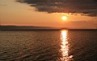
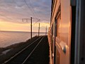
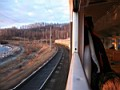
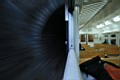
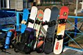
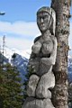
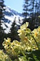

|
|
Тальцинский 2008 дубль 2
|
||||||||||||||||||||||||||||
    |
||||
 На ст.Выдрино |
 Тальцинский на горизонте |
 Марина и Таня |
 Ксюша и Андрей |
|
 Заблудившиеся |
 Таня, Мари и Уля |
|
 Серега и дрэды |
 Ульяна и ботинки |
 Затропили |
 Просто пейзаж |
 Баба |
 Цветочки |
|
Зашли замечательно, за 5 часов от турбазы. Погода солнечная. Снега еще много. В верхнем лагере - иркутяне и ангарчане, когда мы пришли, они уже пошли кататься на самый крутой склон. Чуть пониже разбили лагерь улан-удэнцы (читайте отчет от Байкальского Экстрима). В общем, все было клёво :)
А это фотографии с Таниного фотика, кто конкрено эти замечательные кадры делал, не могу знать :) Ребята неплохо отдохнули и покатались, надеюсь кто-нибудь из них напишет отчетик о днях 9-10-11 мая...
 На Шаман-Горе |
 Андрюха |
 Марина |
 Таня |
 Уля |
 Ксюша варит топор |
 Песни у костра |
 Таня и Космо |
PS: а вот собственно и отчет от Марины (в очень оригинальном виде :)
"Сказание о Тальце"
Еще ссылки в тему:
Тальцинский 9 мая 2005
Тальцинский 9 мая 2006
Тальцинский 1 мая 2007
Тальцинский 1 мая 2008
МАЙ 2008
Фото-отчет от Лёхи Слюдянского